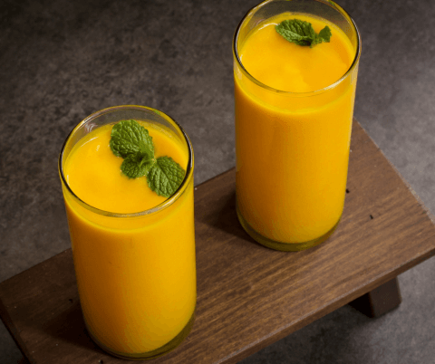

Mango Lassi
Description
Mango Lassi is a delicious, cooling, and refreshing beverage that can help correct liver and menstrual disorders, as well as poor eyesight. The yogurt in this recipe helps balance the acidity of the mango to aid in digestion.
Ingredients
- 2 cups homemade yogurt
- 2 medium ripe mangoes
- 3 Tbsp maple syrup or honey
- 6 ice cubes
- 1/8 tsp rose water (optional)
Instructions
- Peel and slice mangoes.
- Put all ingredients in the blender.
- Blend at high speed until smooth.